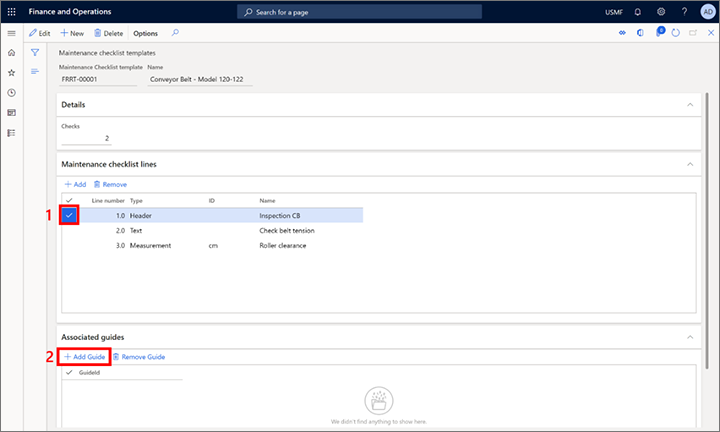
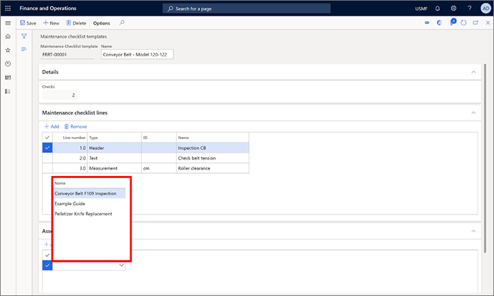
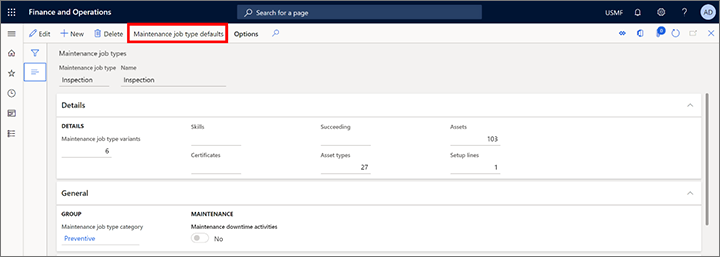
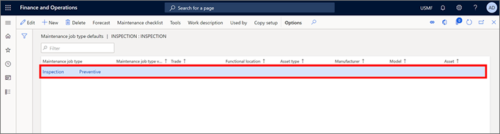
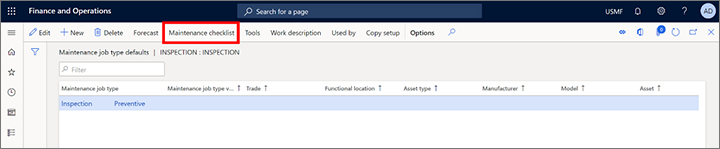
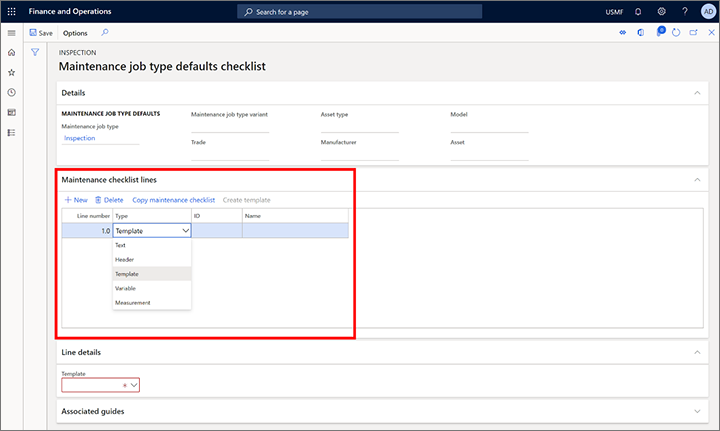
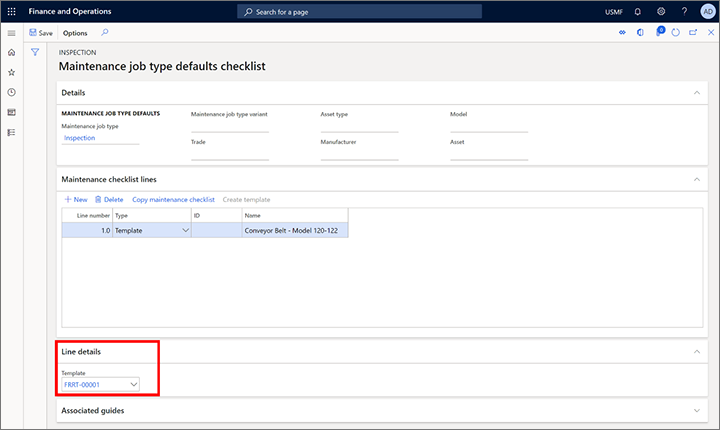
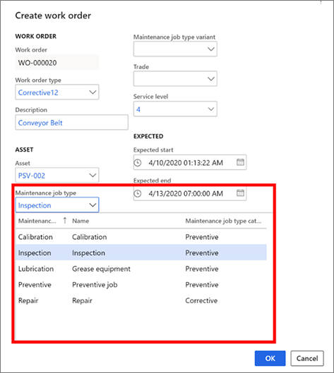
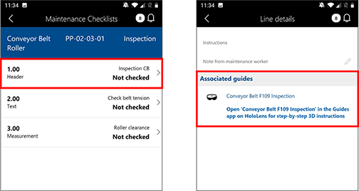
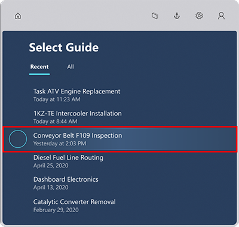

Integrieren von Dynamics 365 Supply Chain Management (Anlagenverwaltung) in Dynamics 365 Guides
Sie können das Modul Anlageverwaltung in Microsoft Dynamics 365 Supply Chain Management in Dynamics 365 Guides integrieren, um die Mixed-Reality-Anleitungen in Ihren täglichen Service- und Wartungsworkflows zu nutzen. Wenn eine Anleitung einem Anlagenverwaltungs-Arbeitsauftrag zugeordnet ist, sieht ein Mitarbeiter, der die Wartungsprüfliste des Arbeitsauftrags in der mobilen Supply Chain Management (Dynamics 365)-App öffnet, dass eine Anleitung verfügbar ist. Die Arbeitskraft kann dann die Anleitung in der Dynamics 365 Guides HoloLens-App finden und öffnen.
Voraussetzungen
Bevor Sie Anleitungen an Anlagenverwaltungs-Arbeitsaufträge anhängen können, müssen Sie die folgenden Voraussetzungen erfüllen:
Einrichten von Dynamics 365 Supply Chain Management Version 10.0.9 oder höher.
Aktivieren Sie duales Schreiben für Supply Chain Management-Apps (This is an external link).
Schalten Sie Flight ein (This is an external link) für die Funktion MRGuidesFeature. (Für Produktionsumgebungen müssen Sie zuerst ein Support-Ticket übermitteln, damit Ihr Mandant zur Flighting-Gruppe hinzugefügt wird.)
Aktivieren Sie die folgenden Konfigurationsschlüssel auf der Seite Lizenzkonfiguration:
- Anlagenverwaltung > Anlagenverwaltung – Mixed Reality
- Mixed Reality > Mixed Reality-Anleitung
Einrichten von Dynamics 365 Guides Version 200.0.0.96 oder höher.
Verwenden von Dynamics 365 Guides mit Anlagenverwaltung
Um eine Anleitung zuzuordnen, verwenden Sie eine Wartungsprüflistenposition in der Anlagenverwaltung. Sie können die Zuordnung über eine Wartungsprüflistenvorlage, einen Wartungsauftragstyp oder einen Arbeitsauftrag erstellen, da alle drei Wartungsprüflistenpositionen enthalten. Sie können Zeit sparen, indem Sie eine Vorlage verwenden, da eine Vorlage allen Wartungsauftragstypen zugeordnet werden kann, die sie verwenden. Beispielsweise wird eine Anleitung, die einem Wartungsauftragstyp zugeordnet ist, automatisch allen Arbeitsaufträgen zugeordnet, die diesen Auftragstyp angeben. Andererseits existiert eine Anleitung, die direkt einem Arbeitsauftrag zugeordnet ist, nur für diesen Arbeitsauftrag.
Eine Anleitung einer Wartungsprüflistenvorlage zuordnen
Um eine Anleitung einer Wartungsprüflistenvorlage zuzuordnen, folgen Sie diesen Schritten.
Erstellen Sie eine Anleitung mit dem Dynamics 365 Guides-PC und HoloLens-Apps. Informationen darüber, wie eine Anleitung erstellt wird, finden Sie in den folgenden Themen:
In Supply Chain Management erstellen Sie eine Wartungsprüflistenvorlage.
Ordnen Sie die Anleitung zu, die Sie mit einer Wartungsprüflistenposition in der neuen Wartungsprüflistenvorlage erstellt haben:
Im Inforegister Wartungsprüflistenpositionen wählen Sie die Position aus, der Sie die Anleitung zuordnen möchten.
Wählen Sie im Inforegister Zugeordnete Anleitungen die Option Anleitung hinzufügen aus.

Wählen Sie im Feld Name eine Anleitung aus, und wählen Sie dann Speichern aus.

Ordnen Sie die Wartungsprüflistenvorlage einem Auftragstyp zu:
Erstellen Sie einen Wartungsauftragstyp, oder wählen Sie einen vorhandenen Wartungsauftragstyp aus.
Wählen Sie im Aktionsbereich Standardeinstellungen für den Wartungsauftragstyp aus.

Erstellen Sie eine Position, und wählen Sie dann Speichern aus.

Wählen Sie im Aktionsbereich Wartungsprüfliste aus.

In der Registerkarte Wartungsprüflistenpositionen fügen Sie eine Position hinzu, und ändern Sie dann den Wert des Felds Typ zu Vorlage.

In der Registerkarte Positionsdetails im Feld Vorlage wählen Sie die Vorlage aus, der Sie die Anleitung zugeordnet haben, und wählen Sie dann Speichern aus.

Erstellen Sie einen Arbeitsauftrag, und wählen Sie dann den Wartungsauftragstyp aus, der die Wartungsprüflistenvorlage verwendet, der Sie die Anleitung zugeordnet haben. Die Anleitung wird automatisch dem Arbeitsauftrag zugeordnet.

Zeigen Sie die Anleitung an, die dem Arbeitsauftrag und den Arbeitskräften zugeordnet ist:
Öffnen Sie den mobilen Arbeitsbereich „Anlagenverwaltung“, um auf den Arbeitsauftrag zuzugreifen.
Öffnen Sie die Wartungsprüfliste für den Arbeitsauftrag.
Wählen Sie eine Prüflistenposition aus, um die zugeordnete Anleitung anzuzeigen.

Öffnen Sie die Anleitung in HoloLens.

Note
Sie können einen Leitfaden auch direkt in der Wartungsprüfliste eines Arbeitsauftrags oder eines Auftragstyps zuordnen.
Important
Es gibt ein bekanntes Problem, bei dem, wenn Sie eine Wartungsprüflistenvorlage einem Standard-Wartungsauftragstyp zuordnen, die Anleitung, die mit der Vorlage verknüpft ist, nicht im Inforegister Zugeordnete Anleitungen der Seite Wartungsauftragstyp-Standardwerte angezeigt wird. Die Anleitung wird jedoch angezeigt, nachdem dieser Auftragstyp auf einen Arbeitsauftrag im Inforegister Zugehörige Anleitungen angewendet ist.